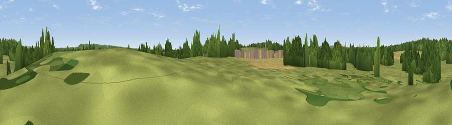

Wade Hill
#43674 in England · top 83% of its area beats it · near CalmoreThe view, rendered

A 360° render of this exact spot computed from the terrain model, tree cover and land cover — summer colours, afternoon light, calibrated against photographs of famous viewpoints. Real trees, hedges and buildings will differ in detail.
The panorama
Grey silhouette: terrain skyline in each direction (720 bearings, Earth curvature and refraction included). Dashed green: skyline with trees (+15 m) and buildings (+8 m) as obstacles. Blue strip: how far the ground is visible on each bearing.
Where the view opens
Wedge length = distance to the farthest visible ground on that bearing (vegetation-aware). Rings at 10, 25 and 50 km.
What fills the view
44% grassland · 33% woodland · 20% cropland · 3% built-up
Angular shares of the visible panorama (visual magnitude), not map area. Landscape diversity 0.52 (0–1 Shannon).
Key numbers
More beautiful places nearby
The staircase of upgrades: each row has a higher view potential than everything closer. Driving times are estimates from straight-line distance, calibrated against real road routing — check an actual route before setting out.
| Place | Direction | Drive | Score |
|---|---|---|---|
| Pauncefoot Hill | N · 3 km | ~6 min | 28.4 |
| Tatchbury Mount | SSW · 3 km | ~7 min | 40.3 |
| Viewpoint near Upton | ENE · 4 km | ~10 min | 46.3 |
| Viewpoint near Bramshaw | W · 8 km | ~16 min | 46.6 |
| Viewpoint near West Dean | NW · 12 km | ~22 min | 53.1 |
| Viewpoint near West Dean | NW · 12 km | ~23 min | 57.9 |
| Dean Hill | NW · 13 km | ~24 min | 59.6 |
| Viewpoint near King's Somborne | NNE · 14 km | ~25 min | 61.3 |
50.94945, -1.51475 · source: osm peak · position refined by local search. Computed location — check access rights before visiting.